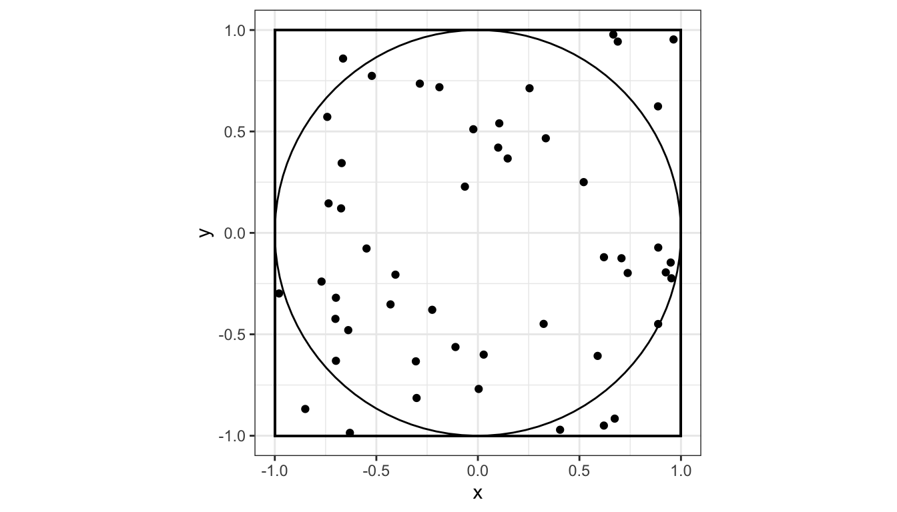
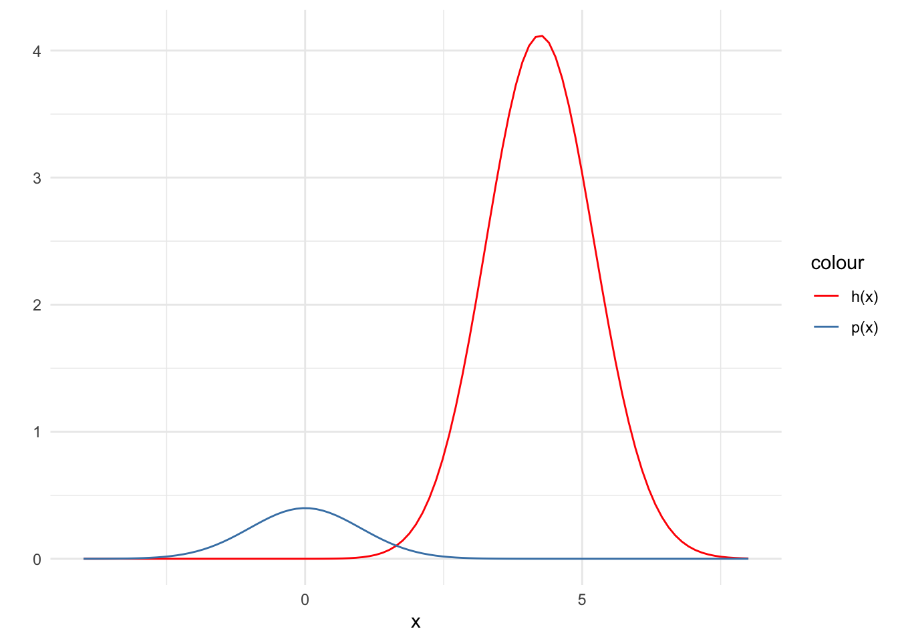
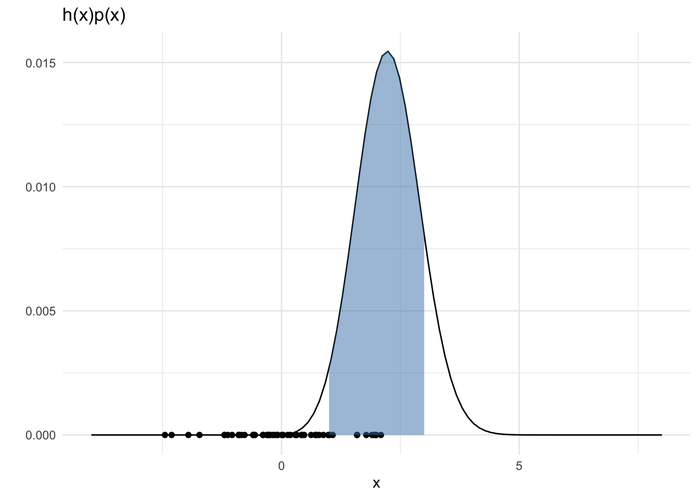
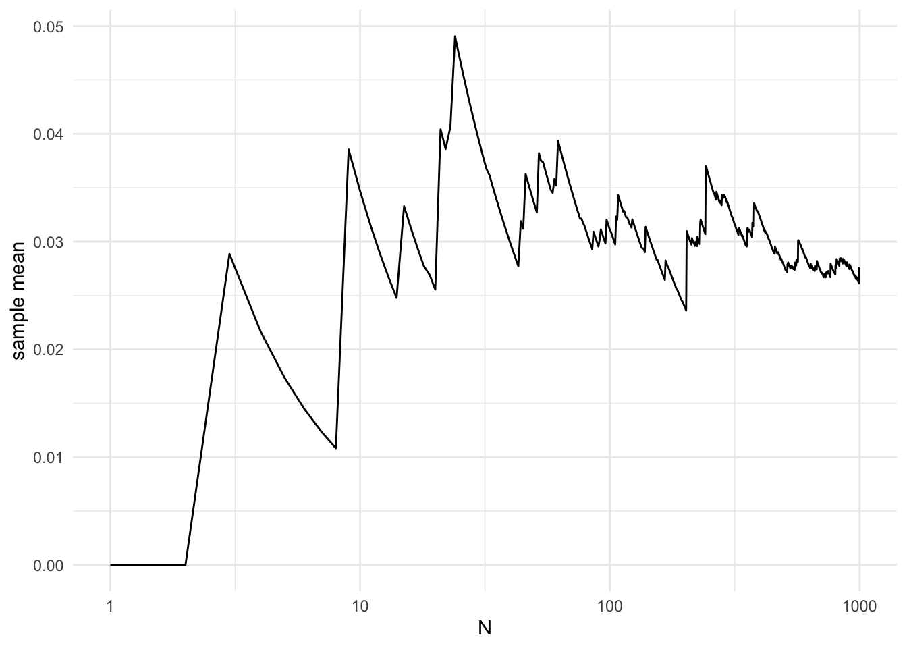

Monte Carlo integration
Concept
Statistical motivation
Integration is everywhere,
CDF
Computing means, medians
Computing marginal probabilities
… and more
Monte Carlo integration
Approximate a deterministic integral by a stochastic average
Shines when other methods of integration are impossible (e.g. high dimensional integration)
Works because of law of large numbers: for a random variable \(X\), the sample mean \(\bar{x}_N\) converges to the true mean \(\mu\) as the number of samples \(N\) tends to infinity.
. . .
Recall
\[ \mathbb{E}[X] = \int_x x~f_x(x) dx \approx \frac{1}{N} \sum_i^N x_i \]
where \(f_x(x)\) is the probability density function for random variable \(x\).
. . .
Key insight
- Expectations are integrals and integrals are expectations.
Toy example: estimating \(\pi\)
The picture to have in mind
The area of the unit circle, \(A_\text{circle} = \pi\). We’ll pretend we don’t know and want to estimate \(A_\text{circle}\)
50 random points thrown into the box defined by coordinates (-1, -1), (-1, 1), (1, -1), (1, 1)
39 points land inside, 11 points outside
\(\frac{39}{50} \approx \frac{A_\text{circle}}{A_\text{box}}\)
\(A_{\text{circle}} \approx .78 \cdot 4 = 3.12\)
How is this Monte Carlo integration?
\[ \begin{aligned} \pi &= \int_0^1 \int_0^{2\pi} r d\theta dr\\ &= \int \int I(x^2 + y^2 < 1) dx dy\\ &= 4 \mathbb{E}~I(X^2 + Y^2 < 1)\\ &\approx 4\cdot\frac{1}{n}\sum_{i=1}^n I(X^2 + Y^2 < 1) \end{aligned} \]
where \(X\) and \(Y\) are iid \(Uniform(-1, 1)\) and \(I()\) is the indicator function.
Exercise
Approximate \(\pi\) in R using 5000 samples \((x, y)\) that are iid \(Uniform(-1, 1)\).
Plot the estimate of \(\pi\) on the y-axis and the number of samples on the \(x-axis\).
- Repeat, the two steps above using 5000 samples \((x, y)\) that are iid \(Uniform(-5, 5)\)
Why Monte Carlo?
Consider computing the integral
\[ V = \int h(x) p(x) dx \] where \(p(x)\) is a density.
We could perform numerical integration by computing the Rieman sum of \(h(x)p(x)\) over some fine grid of \(x\).
If \(h(x)p(x)\) is bounded, then a grid of mesh size \(\delta > 0\) gives an \(\mathcal{O}(\delta)\) approximation error.
If \(x\) is one dimensional, then a grid of mesh size \(\delta\) requires \(N = \frac{1}{\delta}\) many grid points.
. . .
- If \(x\) has dimension \(p\), then we need \(N = \left(\frac{1}{\delta}\right)^p\) grid points.
. . .
By CLT, \(\hat{V}_n = \frac{1}{N} \sum_{i = 1}^N h(X_i)\) where \(X_i \overset{\mathrm{iid}}{\sim} p(x)\) converges to \(V\) at the rate \(\sqrt{N}\), irrespective of \(p\)!
The curse (blessing) of dimensionality 
Naive Monte Carlo
Example
Consider computing the integral
\[ V = \int_1^3 x~e^{-\frac{(x-4)^2}{2}} \frac{1}{\sqrt{2\pi}} e^{-\frac{x^2}{2}} dx \] Here, \(p(x)\) is the standard normal density and
\[ h(x) = I(x \in (1, 3))~x~e^{-\frac{(x-4)^2}{2}} \]
. . .
So we can view this as \(\mathbb{E}~h(x) \approx \frac{1}{N} \sum_{i=1}^N h(x)\) where \(X\) is standard normal.
\(p(x)\) off from \(h(x)\)
- Note: here \(h(x) = x~e^{-\frac{(x-4)^2}{2}} \frac{1}{\sqrt{2\pi}}\) (i.e. I am dropping the indicator function for illustrative purposes)

Samples not good for \(h(x)p(x)\)

set.seed(2)
hp = function(x) {
h(x) * dnorm(x)
}
N = 50
points = data.frame(x = rnorm(N, 0, 1),
y = rep(0, N))
ggplot() +
xlim(-4, 8) +
geom_function(fun = hp) +
geom_point(data = points, aes(x = x, y = y)) +
labs(x = "x", y = "") +
theme_minimal() +
labs(title = "h(x)p(x)") +
stat_function(fun = hp,
xlim = c(1,3),
geom = "area",
fill = "steelblue", alpha = 0.5)Resulting in large approximation error

library(magrittr)
set.seed(2)
N = 1000
x = rnorm(N, 0, 1)
h1 = function(x) {
z = h(x)
z[x < 1] = 0
z[x > 3] = 0
return(z)
}
estimate = vector(length = N)
for (n in 1:N) {
estimate[n] = mean(h1(x[1:n]))
}
V = data.frame(x = seq(N),
y = estimate)
V %>%
ggplot(aes(x = x, y = y)) +
geom_line() +
theme_minimal() +
labs(x = "N", y = "sample mean") +
scale_x_continuous(trans='log10')Further reading
The paper that launched it all: Metropolis, Nicholas, and Stanislaw Ulam. “The monte carlo method.” Journal of the American statistical association 44.247 (1949): 335-341.
A better introduction: Harrison, Robert L. “Introduction to monte carlo simulation.” AIP conference proceedings. Vol. 1204. No. 1. American Institute of Physics, 2010.
A Monte Carlo algorithm to estimate a median by Rick Wicklin at SAS
Acknowledgements
The best parts of these slides were adapted from Prof. Surya Tokdar’s notes on Monte Carlo integration.